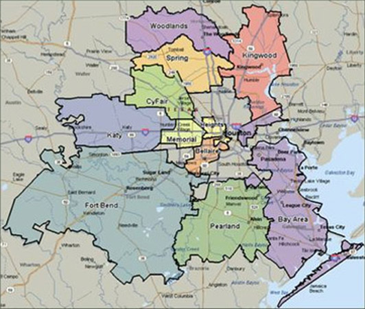

For (Absolute) Beginners
Hello World!

This is Houston, a.k.a. H-Town.
The largest city in Texas and the 4th largest city in the United States of America.
I call it home, since 2019.
Harris County
This is Houston, officially. Houston was founded by the first colonist back in 1836. It is the most diversed city in the world, today. Houston is the second fastest-growing major city in the United States. This rapid increase has likely been due to growth in Houston's major industries, specifically medicine, oil and gas, and aeronautics. "Houston" was the first word spoken on the Moon. For Houstonians, Earth is only the beginning. The first human city in space will be named "New Houston", I hope.
Great Houston Area
Houston is not only one county. When people talk about Houston, they think about Houston–The Woodlands–Sugar Land metropolitan area. Galveston and Brazoria county sometimes counts as the part of this mega city. According to the latest estimates, 10 milion people in this area made Greater Houston 4th largest city in USA. Greater Houston is widely noted for its ethnic diversity and strong international community.
NASA
Everybody loves NASA. Older Houstonians remember the first human space flights. Lyndon B. Johnson Space Center, is nicknamed "Space City" in 1967. It is not NASA, officially, but after Kennedy Space Center in Florida it is the most important NASA facility. Johnson Space Center leads NASA's human spaceflight-related scientific and medical research programs. Technologies developed for spaceflight are now in use in many areas. It is popularly known by its radio call signs "Mission Control" and "Houston".